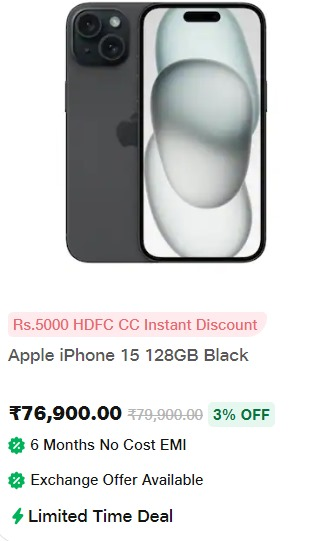
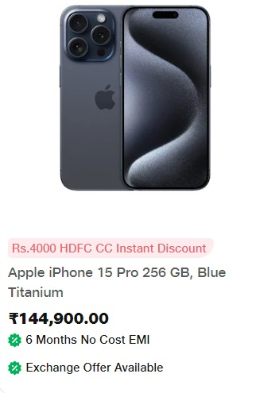
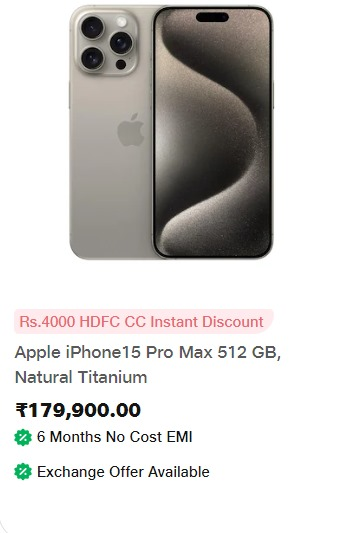

iphone 15 series

Key Features
- Front Camera - 12 MP
- Rear Camera - 48 MP + 12 MP
- Processor - A16 Bionic Chip
- Optical zoom options - Upto 5x
- Display - Super Retina XDR display 17.02 cm (6.7 inch)
- Aluminum with colour-infused glass back
- Ring/Silent switch
- Dual eSIM
- Dynamic Island a magical way to interact with iPhone
- Video playback Up to 26 hours & Audio playback Up to 100 hours
- Water resistant to a depth of 6 meters for up to 30 minutes
- Fast-charge capable Up to 50 percent charge in 35 minutes
- Compatible with MagSafe cases, wallets, wireless chargers, and more

Key Features
- 15.54 cm (6.1 inch) Super Retina XDR OLED Display
- 48MP Main, 12MP Ultra Wide, 12MP Telephoto Rear Camera
- 12 MP Selfie Camera, iOS 17 Operating System
- Rated IP68 Splash, Water and Dust Resistant
- A17 Pro Chip, New 6core CPU, New 6core GPU, New 16core Neural Engine
- Enabled by TrueDepth front camera for facial recognition
- Emergency SOS via satellite, Crash Detection
- FaceTime video calling over cellular or WiFi, FaceTime audio
- Activate hands free with only your voice using Siri or Hey Siri
- >MagSafe and Qi wireless charging
- Aerospace-grade Titanium

Key Features
- Super Retina XDR display
- 17.02 cm (6.7 inch) all-screen OLED Display
- 48MP Main, 12MP Ultra Wide, 12MP Telephoto Rear Camera
- Dual eSIM
- 5G Enabled Phone
- Fingerprint-resistant Oleophobic Coating
- Face ID Enabled by TrueDepth Camera for Facial Recognition
- Built-in rechargeable lithiumion battery
- MagSafe and Qi wireless charging
- Aerospace-grade Titanium